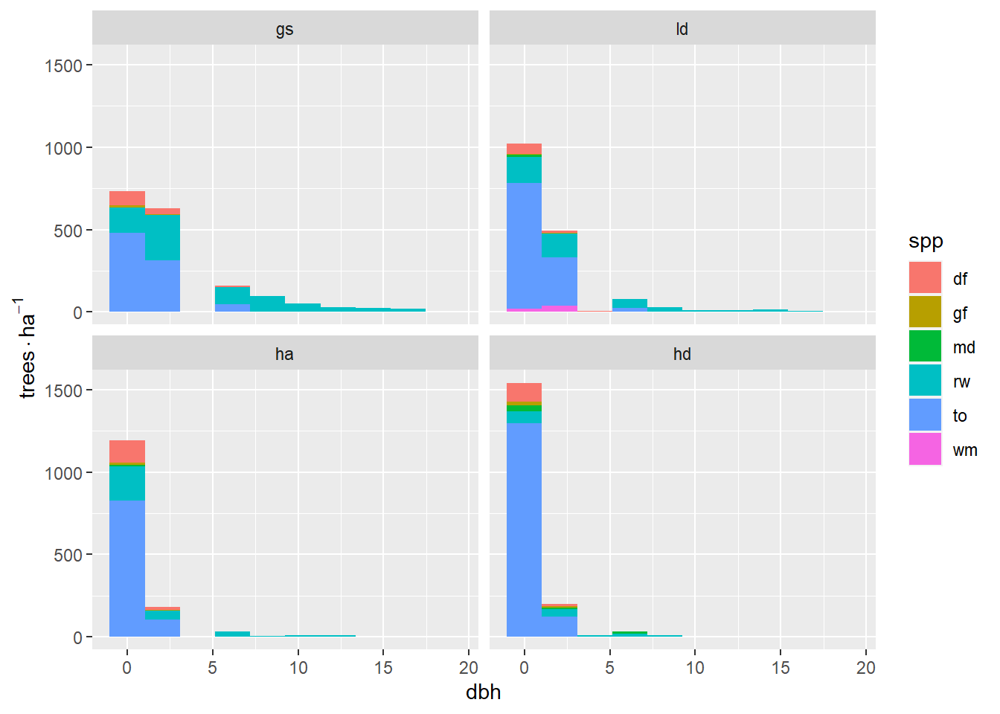
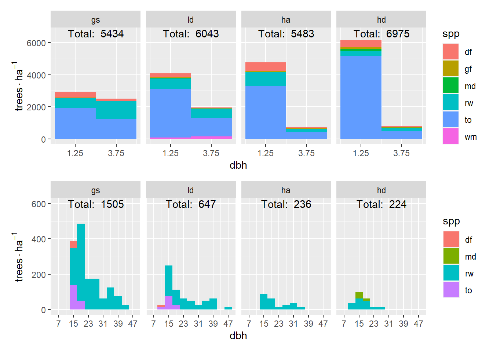

library(tidyverse)
library(ggdist)
library(patchwork)
load("regen_wrangled.RData")9 Reneration data summary
9.1 Objectives
- Determine if there are significant differences in species composition, or size class distirbution between treatments
This objective is somewhat vaugue because I am not familiar with the statistical techniques used for the weighted (diameter), multi-variate (species) distribution data that we have.
For starters, I will look at summaries of size class distributions by species. I will report densities in terms of trees per hectare (tph). Our plots were fixed area, 4-m-radius plots, or 50.27 m2. Each stem in a veg. plot represents 198.94 stems/ha. As shown in Figure 2.2, there are:
- 64 veg. plots in the experiment
- 16 in a treatment
- 4 in a macro plot
This plot is a little difficult to interpret beccause of the large difference in counts from the smallest to largest stems. It might make more sense to look at regen smaller than 2 inches separately.
tph <- c(all = 1/64, treat = 1/16, plot = 1/4, corner = 1) * (10000 / (16 * pi))
tph["all"] all
3.108495 p <- regen |>
ggplot(aes(dbh, fill = spp)) +
stat_bin(aes(y = after_stat(count) * tph["all"]), bins = 10) +
facet_wrap(vars(treat)) +
labs(y = expr(trees%.%ha^-1))
p

Splitting the analysis at 2-inch-diameter stems shows an clear trend in treatments from most to least light.
raw_hist2 <- function(group, bin_breaks, scale_breaks, text_pos) {
treat_total_labels <- summarize(
filter(regen, {{ group }}),
.by = treat,
n = paste("Total: ", round(n() * tph["treat"])),
)
regen |>
filter({{ group }}) |>
mutate(.by = treat, n = paste("Total: ", round(n() * tph["treat"]))) |>
ggplot(aes(dbh, fill = spp)) +
facet_wrap(vars(treat), nrow = 1) +
stat_bin(aes(y = after_stat(count) * tph["treat"]), breaks = bin_breaks) +
geom_text(
data = treat_total_labels,
aes(x = text_pos[1], y = text_pos[2], label = n, fill = NULL)
) +
labs(y = expression(trees %.% ha^-1)) +
scale_x_continuous(breaks = scale_breaks)
}
raw_hist2(dbh < 2, seq(0, 2, 1), c(0.5, 1.5), c(x = 1, y = 6600)) /
raw_hist2(dbh >= 2, seq(2, 20, 2), seq(3, 19, 4), c(11, 600))
